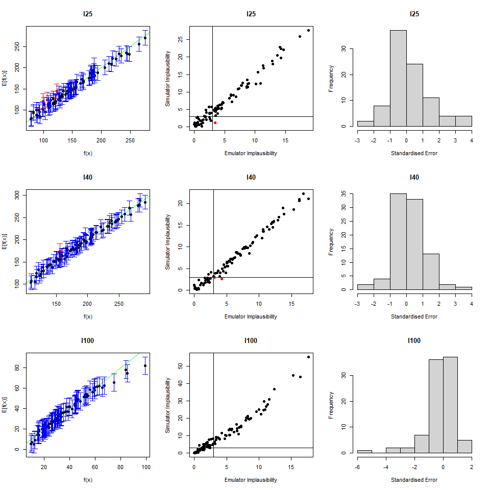
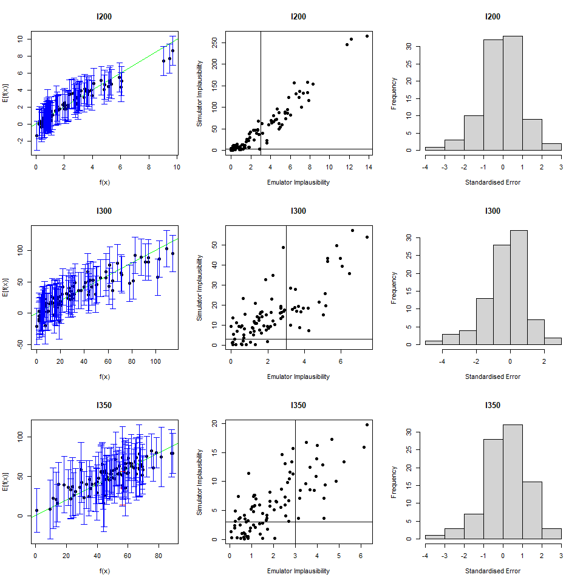
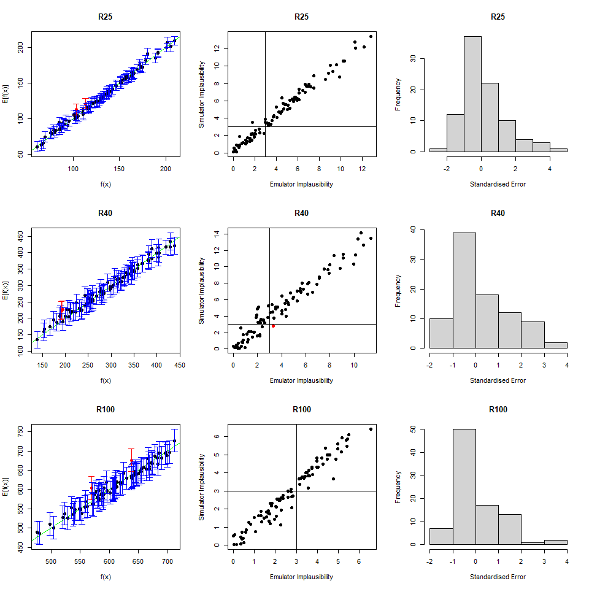
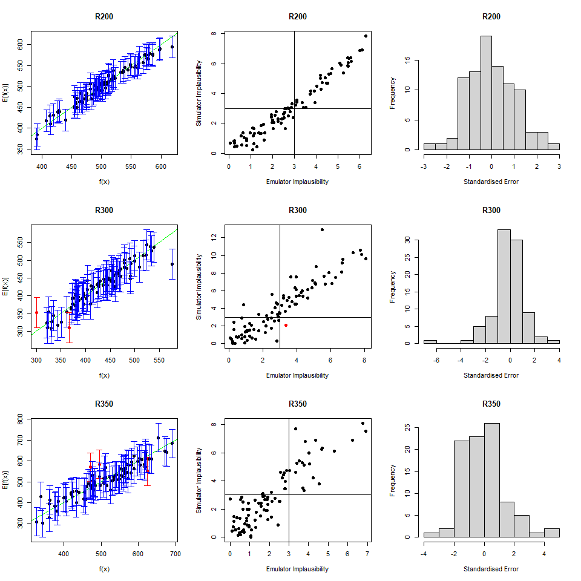

First of all let us take a look at the diagnostics of all the emulators trained in wave 1:
vd <- validation_diagnostics(ems_wave1, validation = validation, targets = targets)


All emulators seem to have more than \(5\%\) of the probability mass for the standardised errors outside \([-2,2]\). We would then benefit from having slightly more conservative emulators, which we can obtain by increasing \(\sigma\). After some trial and error, we chose the following values of sigma for our emulators:
inflations <- c(4,2,4,2,2,2,2,4,4,2,2,4)
for (i in 1:length(ems_wave1)) {
ems_wave1[[i]] <- ems_wave1[[i]]$mult_sigma(inflations[[i]])
}
vd <- validation_diagnostics(ems_wave1, validation = validation, targets = targets)

The diagnostics look good now. We are then ready to generate new points with our improved emulators:
new_points <- generate_new_runs(ems_wave1, 180, targets, verbose = TRUE)
## [1] "Performing Latin Hypercube sampling..."
## [1] "75 points generated from LHS at I=3"
## [1] "Performing line sampling..."
## [1] "Line sampling generated 19 more points."
## [1] "Performing importance sampling..."
## [1] "Importance sampling generated 194 more points."
## [1] "Selecting final points using maximin criterion..."
## [1] "Resampling: Performing line sampling..."
## [1] "Line sampling generated 16 more points."
## [1] "Resampling: Performing importance sampling..."
## [1] "Importance sampling generated 87 more points."
## [1] "Selecting final points using maximin criterion..."
plot_wrap(new_points, ranges)

If we compare the parameter sets we just generated with those generated using non-customised emulators, we note that the space has now been reduced less than before. This happened because our customisation helped us to build more conservative emulators, decreasing the risk of rejecting good parts of the input space. Building emulators carefully ensures that we end up with a set of points that are truly representative of the set of all points that fit the data (rather than a subset of it).